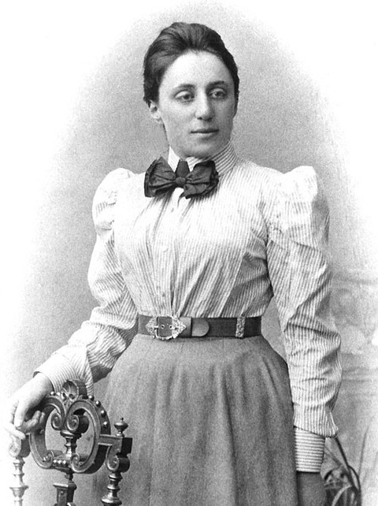
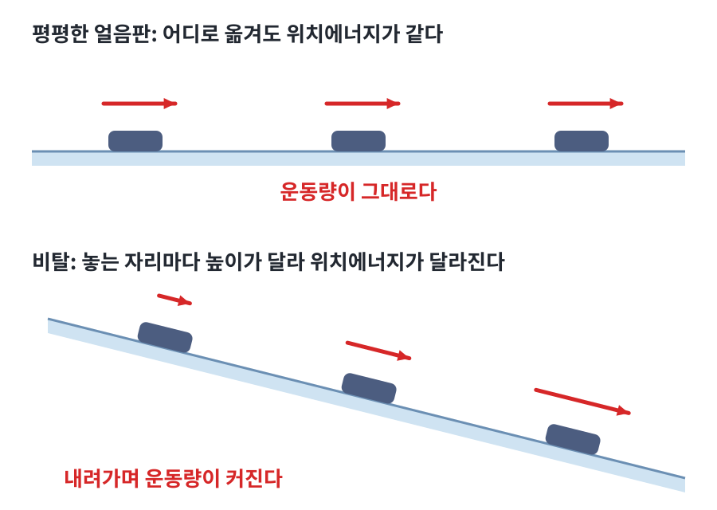

뇌터 정리: 대칭마다 보존량이 하나
얼음판 위에서 밀어 놓은 퍽은 거의 같은 빠르기로 한참을 미끄러진다. 같은 퍽을 비탈에 놓으면 저절로 빨라진다. 한쪽에서는 빠르기가 변하지 않고 다른 쪽에서는 변하는데, 그 차이는 어디서 올까? 오일러–라그랑주 방정식을 다시 보면 라그랑지안의 모양만 보고도 답할 수 있다. 이를테면 L에 q가 아예 들어 있지 않으면 어떻게 될까?
역사: 에미 뇌터
에미 뇌터는 에를랑겐 대학에서 박사 학위를 받은 뒤 7년 동안 급여 없이 가르치고 연구했다. 1915년 힐베르트와 클라인이 뇌터를 괴팅겐으로 불렀는데, 뇌터가 전공한 불변식 이론(식을 바꿔 적어도 그대로 남는 양을 다루는 수학)이 일반상대성이론을 이해하는 데 필요했기 때문이다. 힐베르트는 이 이론에서 에너지 보존이 깨지는 것처럼 보이는 문제를 붙들고 있었다. 중력이 지닌 에너지가 다시 중력을 만들기 때문이었다. 뇌터는 이 수수께끼를 풀면서, 연속적인 대칭(조금씩 옮기거나 돌려도 식이 그대로인 성질)마다 보존량이 하나씩 있다는 정리를 얻었다. 논문 「불변 변분 문제」는 1918년 7월 괴팅겐 학회에서 클라인이 대신 발표했다. 뇌터가 그 학회의 회원이 아니었기 때문이다. 대학의 교수 자격 심사도 여성이라는 이유로 막혀, 뇌터는 4년 동안 힐베르트의 이름을 내건 강의를 맡아야 했다. 힐베르트는 반대하는 교수들에게 "대학은 목욕탕이 아니다"라고 했다고 전해진다. 뇌터는 1919년에야 교수 자격을 얻었다.

장소를 옮겨도 같으면: 운동량
L에 q가 들어 있지 않으면 오일러–라그랑주 방정식의 우변 ∂L/∂q가 0이므로 ∂L/∂q̇은 시간에 따라 변하지 않는다. 이 양을 운동량(momentum, 최적화 기법 모멘텀과 영어 이름이 같다)이라 하고 p = ∂L/∂q̇로 쓴다. 이를테면 자유롭게 움직이는 입자는 L = ½mq̇²이므로 p = mq̇이다. L이 q에 의존하지 않는다는 것은 장소를 옮겨도 물리가 같다는 뜻이므로, 이 대칭이 운동량 보존을 만든다고 말할 수 있다.

시간을 옮겨도 같으면: 에너지
그렇다면 L에 시간 t가 직접 들어 있지 않을 때는 무엇이 보존될까? 이때는 다음 양이 보존된다(정말 변하지 않는지는 아래 문제 12에서 확인한다).
이 양이 무엇인지 알아보려면 L = ½mq̇² − U(q)를 넣어 보면 된다. 그러면 E = mq̇² − (½mq̇² − U) = K + U, 즉 우리가 아는 에너지가 나온다. 던진 공(질량 1, 2초 뒤 같은 높이로 돌아오는 포물선)으로 재 보면 0초, 0.5초, 1초 어느 때나 E = 48.02 J이다. 이번에는 어제와 오늘의 물리 법칙이 같다는 대칭이 에너지 보존을 만드는 것이다. 여기에 방향에 대한 대칭까지 더하면 각운동량(회전하는 운동의 양, 팽이가 계속 도는 성질)이 나오고, 정리하면 다음과 같다.
| 대칭 | 보존되는 양 |
|---|---|
| 시간을 옮겨도 같다 | 에너지 |
| 장소를 옮겨도 같다 | 운동량 |
| 방향을 돌려도 같다 | 각운동량 |
이것이 뇌터 정리 (대칭마다 보존량, Noether’s theorem)다.
ML에서: Lagrangian Neural Networks
Cranmer 외(2020)는 운동방정식을 직접 학습하는 대신 신경망으로 L(q, q̇)을 학습하고, 자동미분으로 오일러–라그랑주 방정식을 풀어 가속도를 얻었다. 여기서 움직이는 것은 신경망이 흉내 내는 물리계다. 이때 L은 시간에 의존하지 않으므로, 뇌터 정리에 따라 학습된 동역학에서도 에너지가 보존된다. 논문의 이중 진자 실험에서 가속도를 직접 배운 보통 신경망과 Lagrangian NN은 학습 손실이 7.4 × 10⁻²와 7.3 × 10⁻²로 비슷했다. 그런데 여러 출발 상태에서 100걸음씩 굴렸을 때 실제 에너지와의 차이는 최대 위치에너지의 8%와 0.4%로 크게 갈렸다. 긴 시간을 예측해도 에너지가 새지 않는다는 것이 이 방법의 장점이다.
문제 11. 얼음판에서 서로 밀기
얼음판 위에 몸무게 60kg인 사람과 40kg인 사람이 마주 서 있다가 서로 밀었다. 60kg인 사람이 뒤로 초속 2m로 미끄러져 나갔다면 40kg인 사람은 어느 쪽으로 얼마나 빠르게 움직이는가? (얼음과의 마찰은 무시한다.)

서로 같이 밀었으니까 둘 다 반대쪽으로 초속 2m씩 미끄러지겠죠.
밀기 전 두 사람의 운동량을 더하면 얼마였죠?
둘 다 서 있었으니 0이에요. 얼음판은 어디나 평평해서 두 사람을 통째로 옆으로 옮겨 놓아도 사정이 같으니까, 운동량의 합은 밀고 난 뒤에도 0이어야 하고요.

60 × (−2) + 40 × v = 0이니까 v = +3m/s. 가벼운 쪽이 반대쪽으로 더 빨리 가네요. 서로 같은 힘으로 밀었으니 가벼운 쪽이 더 빨라지는 거고요.
같은 일을 비탈진 얼음판에서 하면요?
비탈에서는 높이마다 위치에너지가 달라서 옮겨 놓으면 사정이 달라져요. 밀고 난 뒤에도 둘 다 아래쪽으로 점점 빨라지니까, 비탈을 따라 잰 운동량의 합은 0으로 남지 않겠네요.

대칭이 깨지면 보존도 깨지는 거네요. 조별 과제 점수를 팀 안에서 나누기만 하면 합이 그대로인데, 교수님이 가산점을 주면 합이 바뀌는 거랑 같아요.
문제 12. 무엇이 보존되는가
L이 시간 t에 직접 의존하지 않을 때 보존되는 양을 찾고, 그 양이 정말 시간에 따라 변하지 않는지 확인하라. 진자에서 그 값을 써라.
L이 t에 의존하지 않으니까 L 자체가 보존되죠.
떨어지는 공으로 확인해 봐요. 질량 1, 정지 상태에서 놓아서 1초 뒤에는요?

처음에는 K = 0, U = 0이라 L = 0. 1초 뒤에는 속력 9.8, 높이 −4.9니까 K ≈ 48.0, U ≈ −48.0. L = K − U ≈ 96.0… 바뀌었네요. 대신 K + U = 0은 그대로예요.

L에 t가 직접 없어도, q(t)와 q̇(t)를 통해 시간에 따라 변해요. 보존되는 건 E = q̇·∂L/∂q̇ − L이에요. 서연 학생이 진자에서 계산해 볼까요?
L = ½ml²θ̇² + mgl cos θ이니까 ∂L/∂θ̇ = ml²θ̇. E = ml²θ̇² − ½ml²θ̇² − mgl cos θ = ½ml²θ̇² − mgl cos θ. 어, 그런데 에너지는 K + U라고 했잖아요. L에서 뒤의 항이 +mgl cos θ이니까 U = mgl cos θ고, E는 K + U = ½ml²θ̇² + mgl cos θ가 돼야 하지 않나요? 제 계산과 부호가 다르네요.
계산은 맞고, U를 읽은 방법이 틀렸어요. L = K − U이니까 L에 +mgl cos θ로 보이는 항은 −U예요. U = −mgl cos θ, 추가 가장 낮은 θ = 0에서 가장 작죠. 그러니 서연 학생이 계산한 E가 정확히 K + U예요.

계산은 맞았는데 제가 만든 검산이 틀렸네요. 그런데 E의 모양 q̇·∂L/∂q̇ − L은 어디서 오는 거예요? 너무 갑자기 나온 것 같아요.
왜 하필 이 모양인지는 지금은 답하지 않을게요. 좋은 질문이니 적어 두세요. 대신 정말 변하지 않는지는 지금 확인할 수 있어요. dE/dt를 계산해 봐요.
E = q̇·∂L/∂q̇ − L을 곱의 미분으로 풀면 q̈·∂L/∂q̇ + q̇·(d/dt ∂L/∂q̇) − dL/dt예요. 아까 들은 대로 L은 q와 q̇을 통해 변하니까 dL/dt = ∂L/∂q·q̇ + ∂L/∂q̇·q̈. 넣으면 q̈·∂L/∂q̇끼리 지워지고 q̇·(d/dt ∂L/∂q̇ − ∂L/∂q)만 남아요.

괄호 안이 오일러–라그랑주 방정식이니까 실제 경로에서는 0이야. 그래서 dE/dt = 0.
하나 더요. 떨어지는 공의 L에는 높이 y가 들어 있어요. 운동량 mẏ는 보존될까요?
질량 1이면 0초에 0, 1초에 −9.8이에요. 변하네요.

∂L/∂y = −mg가 0이 아니니까 d/dt(mẏ) = −mg예요. 높이마다 사정이 달라서 위아래로 옮기는 대칭이 없으니 그 방향 운동량도 보존되지 않는 거고요. 옆으로 옮기는 대칭은 그대로니까 옆 방향 운동량은 보존되겠네요.
문제 13. 가속도 오차 1%는 100초 뒤에 얼마나 커지나
질량 1인 추가 용수철에 매달려 q̈ = −q로 움직이고, q = 1에서 정지 상태로 출발한다. 에너지 E = ½q̇² + ½q²는 0.5다. 신경망 두 개가 이 운동을 배웠다. 모델 가는 가속도를 직접 배워 q̈ = −q + 0.01q̇라는 작은 오차가 남았고, 모델 나는 라그랑지안을 배워 L = ½q̇² − 0.51q²라는 오차가 남았다(가속도로 쓰면 q̈ = −1.02q). 각 모델로 100초를 굴리면 실제 에너지 ½q̇² + ½q²는 얼마쯤이 되는가?
모델 가의 오차 0.01q̇는 가속도의 1%쯤이고, 모델 나는 −1.02q라서 2%예요. 가가 두 배 정확하니까 100초 뒤에도 둘 다 에너지가 1~2%쯤만 틀리겠죠.
모델 가에서 에너지가 시간에 따라 어떻게 변하는지 dE/dt부터 계산해 볼까요?
dE/dt = q̇q̈ + qq̇ = q̇(−q + 0.01q̇) + qq̇ = 0.01q̇². 늘 0 이상이에요. 한 번 흔들릴 때마다 에너지가 조금씩 쌓이기만 하네요.
q̇²을 한 주기 동안 평균하면 E쯤이니까 dE/dt ≈ 0.01E, 에너지가 e^(0.01t)로 불어나요. 100초면 e ≈ 2.7배, 0.5가 1.36이 돼요. 돌려 보니 1.37이고 진폭도 1에서 1.63으로 커졌어요.
모델 나는요?
모델 나의 L에는 t가 직접 없으니까 모델 자신의 에너지 ½q̇² + 0.51q²가 0.51로 보존돼요. 그러면 실제 에너지 ½q̇² + ½q²는 0.50과 0.51 사이에 갇혀요. 100초 뒤에도 2% 안이에요.

가속도는 모델 가가 더 정확한데 오래 굴리면 모델 나가 이기네요. 오차가 작은지보다 오차가 한쪽으로 쌓이는지가 중요했어요.
맞아요. 대칭을 모델의 구조에 넣어 두면 오차가 있어도 그 대칭이 지키는 양은 새지 않아요. Lagrangian NN이 이중 진자에서 보인 차이가 이거예요.
학점 계산기에서 과목마다 반올림을 한쪽으로만 하면 학기가 쌓일수록 크게 틀어지는데, 올림과 내림이 섞이면 오래 가도 크게 안 틀어지는 거랑 같네요.